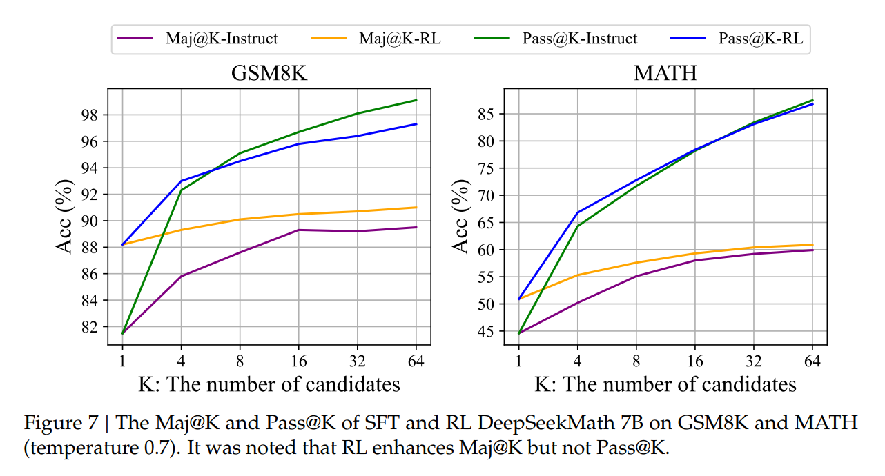

本章基于对 75 份参考资料（包括有效论文与开源仓库，可以合并为64 个独立技术单元）的系统梳理，对 System-One 决策模型领域已形成的可以多源互证的共识结论、仍存在对立观察的争议议题，以及证据尚不足以闭合的开放问题进行分层归纳。
说人话就是 —— 哪里已形成多源互证的共识、哪里仍是并列尚不能统一的争议、哪里证据尚不足以回答任何问题！
10.1、核心研究问题的证据体系概览
基于上述材料梳理，本节将上述的所有观点与研究总结归纳为六项核心研究问题（Research Question, RQ），并对其证据基础与结论成熟度进行总览，所有结论均对应正文第 3–9 章的实证支撑，证据等级强度遵循本报告的来源分层约定。
| 编号 | 研究问题 | 代表性技术单元 | 证据等级 | 核心结论概要 |
|---|---|---|---|---|
| RQ1 | 零训练 logit 读出是否天然具备高准确率与校准能力？校准的来源是什么？ | SemIf、AnyJev、LLM2Jev、NumericJev、多版本 JevBench | A−（跨源复现，集中于 Qwen 底座与字母 / 数字读出协议） | - 准确率层面 “开箱即决策” 成立，但高准确率不等同于天然校准； - 小参数基座（0.6B）零训练读出校准严重失效（ECE 0.278）。 |
| RQ2 | 基于适当评分规则的强化学习（RLCD/RLCR 家族）能否同时优化准确率与校准？配方差异与公开程度如何？ | RLCR、Rewarding Doubt、ConfTuner、Laya、OpenJev-RLCD | A−（机制层面跨源复现；官方闭源配方仅为厂商声明） | - 机制层面，有界适当评分规则作为奖励可同时优化准确率与 ECE，已被 5
项独立研究验证； - 但官方 Jev 的 RLCD 训练配方未公开，外部仅能复现其数学内核的某类自选组合； |
| RQ3 | 决策模型的校准在哪些场景下会失效？ | JevOut、算术拒绝瓶颈研究、选项名极性研究、提示注入研究、概率公理系列评测、position-test、von 架构 | B+（选项敏感性为多源复现，其余失效模式为单 / 双源验证） | 校准失效集中于五类场景：自然上下文夹带、选项名称 / 顺序的语义偏差、算术类拒答失效、对抗提示注入、互补问题的概率一致性缺失； |
| RQ4 | 置信度级联与选择性控制作为生产模式的有效性与成本表现如何？ | JEV-as-a-Judge、反诈筛选研究、渗透测试框架、代码 / 仿真场景研究、多类路由与分级评审实现 | A（2026-10 月更新后新证据支持：跨多领域独立复现≥3 单元，领域集中度显著下降） | “低成本浅层承接多数流量、低置信尾部升级至大模型 / 人工”的级联模式，已在 Agent 编码、多智能体路由、代码修复、推理控制等多领域被独立验证为有效落地方案。 |
| RQ5 | 决策模型作为 Agent 决策层的实践边界与评测规范是什么？ | 渗透测试框架、Jev-Mobile、代码仿真研究、多类 Agent 集成实现、System1-Arena、AgentDecisionBench | B+（多路独立验证，任务场景相对集中；2026-10月证据进行了边界修正） |
决策模型在评估层表现稳定，在仿真层需配合代码实现前瞻逻辑； 新增证据明确了硬边界：单步准确率 67.8% 的模型闭环成功率仅 5.7%–26.5%，4B 及以下参数模型闭环成功率≤3.1%，仅适合委派可记录状态的判断类任务。 |
| RQ6 | 决策模型输出的概率是否满足一致性公理？ | 三篇概率公理独立评测、Sys1Cal-v1 基准 | B+（3 篇独立评测验证） | Jev 模型上已被复现互补 / 互斥问题的概率和不严格等于 1 的现象，但其内在机理尚未明确。 |
六项研究问题的补充说明：
- RQ1（零训练读出的准确率与校准从何而来）：
- 证据列表：
SemIf（github.com/TheoLeeCJ/SemIf-OpenJev）、AnyJev（arXiv:2610.00831）、LLM2Jev（arXiv:2610.02076，4B 冻结 81.4%/ECE 0.057）、NumericJev（arXiv:2609.28587）、openthai（github.com/iapp-technology/openthai-systemone）、reflex（github.com/kshetrajna12/reflex）、jevbench×2（github.com/dhruvmehra/jevbench、github.com/fstandhartinger/jevbench）
该问题源于范式的核心承诺 —— 单次前向读出选项分布看似 “开箱即用”，但工程层面的速度与成本优势不等于校准能力。读出得到的是给定选项下的条件分数，而非经过校准的置信度。
实证显示，4B 参数的 Qwen 模型零样本下可达 81.4% 准确率、ECE 0.057，但 0.6B 小基座同一测量条件下下准确率降至 56.7%、ECE 升至 0.278；且 9.5 万样本的纯判别训练反而会使 ECE 升高，证明判别力与校准是两个独立优化目标，无法通过强化拟合间接获得。
- RQ2（适当评分规则 RL 能否同时优化准确率与校准）：
- 证据列表：
RLCR（arXiv:2507.16806，定理 1）、Rewarding Doubt（arXiv:2503.02623）、ConfTuner（arXiv:2508.18847）、Laya（github.com/NandhaKishorM/laya）、OpenJev-RLCD（arXiv:2609.38850，Cov@5% 81.1% vs GRPO 19.4%）、agent-jev（github.com/malevrigns/agent-jev）、decision-head-rlcd（github.com/Astro-Han/decision-head-rlcd）
该问题的理论基础是严格适当评分规则的 “如实报告最优” 性质，核心争议在于能否将其转化为强化学习奖励。
现有研究共同验证了有界适当规则可同时优化准确率与校准，但官方 RLCD 的奖励函数、优化器细节、合成数据管线均未公开，开源实现均为各自的技术组合，复现结果存在差异。
- RQ3（决策模型校准在哪些场景失效）：
- 证据列表：
JevOut（arXiv:2609.30243，自然上下文翻转 61.4%）、算术拒绝瓶颈（arXiv:2609.39496）、选项名极性（arXiv:2609.26758，+70.42pp）、提示注入（arXiv:2609.28613，ASR 1.8%）、概率公理三连（arXiv:2609.33209、2609.33971、2609.37470）、position-test（github.com/imaddde867/jev-position-test）、von（github.com/wfzyx/von）
校准本质是 “模型 × 数据分布 × 提示词 × 版本” 的联合属性，天然存在失效边界。
读出模型的工作机制是将所有文本视为证据、逐问题独立求值，这一结构决定了其对上下文干扰、选项语义、对抗输入的敏感性。
- RQ4（置信度级联/选择性控制的有效性与成本）：
- 证据列表：
JEV-as-a-Judge（arXiv:2609.26550，41% 费用 + 质量持平）、反诈筛选（arXiv:2609.23959，AUROC 97.4%）、渗透 harness（arXiv:2609.28940）、Code/Simulation（arXiv:2610.01834，ALFWorld 31%→87%）、codex-router（github.com/0xNatoshi/jev-codex-router）、daf-jev（github.com/docxology/daf-jev）；2026 年 10 月新增四单元：JevAgentHarness（arXiv:2610.21412，逐点拟合阈值）、Jev-LiteMAS（arXiv:2610.21411，路由+评审分离）、JevCoder（arXiv:2610.19596，代码修复委派）、Selective Reasoning（arXiv:2610.19644，推理深度早停）
现有生产场景均未将完整动作权限交付决策模型，均通过级联机制兜底。
两级错误的低相关性与逐点阈值设计，为 “低成本层承接主流量、低置信尾部升级” 提供了定量依据；10月份新增的多领域验证进一步提升了该模式的普适性证据等级。
- RQ5（决策模型作 agent 决策层的边界）：
- 证据列表：
渗透 harness（arXiv:2609.28940）、Jev-Mobile（arXiv:2609.30186）、Code/Simulation（arXiv:2610.01834）、agent-jev（github.com/malevrigns/agent-jev）、hermes-jev-skills（github.com/kerpopule/hermes-jev-skills）、openthai（github.com/iapp-technology/openthai-systemone）、llm-typesafe（github.com/simonw/llm-typesafe）、daf-jev（github.com/docxology/daf-jev）；2026-10 边界修正：System1-Arena（arXiv:2610.21244）、AgentDecisionBench（arXiv:2610.21412）
单步判断准确率不等于闭环任务成功率，需明确区分评估层与仿真层的能力差异。
最新的横评数据进一步收窄了决策模型在智能体场景的适用边界，明确其仅适合状态可追溯的判断类任务，不适合长程状态跟踪。
- RQ6（决策概率是否满足一致性/公理）：
- 证据列表：
arXiv:2609.33209、arXiv:2609.33971、arXiv:2609.37470、Sys1Cal-v1（arXiv:2609.35342）
ECE 是整体聚合（pooled）的粗粒度度量，需通过概率公理检验概率输出的合格性。
现有研究实测互补问题概率和为 1.13–1.14，且不同接口间存在显著差异（跨接口分裂 32.8%），潜在机理包括读出近似误差、并行独立求值、训练目标未约束三类假说，尚无定论。
10.2、已形成多源互证的领域共识
以下结论均得到 3 个及以上独立技术单元从不同角度的重复验证，每条均标注核心证据与适用边界。
| 序号 | 共识核心结论 | 证据等级 | 适用边界 |
|---|---|---|---|
| 1 | 读 logit 范式具备显著性价比优势，单次前向读出在延迟、成本上大幅优于自回归生成；范式内联合 listwise 打分效果稳定优于逐选项独立求值 | A− | 证据集中于 Qwen 系因果解码器 + 字母 / 数字读出协议；双向编码器、视觉 / 多模态路线复现尚不充分 |
| 2 | 校准并非开箱自带，零训练读出为选项条件分数而非天然置信度；校准需通过显式训练或后处理实现，纯判别训练无法顺带获得 | A− | 适用于自回归因果解码器的零训练读出场景；带检索增强、内置事实校验的系统不适用 |
| 3 | “低成本决策层承接多数流量、低置信尾部升级”是主流生产落地形态，校准可信是级联模式成立的核心前提 | A（10月新论文更新后强化） | 证据集中于 agent、安全、内容审核领域；医疗、金融等高风险域暂无同级别公开校准证据 |
| 4 | 温度缩放是最低成本的后处理校准手段，校准效果随粒度细分提升；全局单一温度对异构负载不足，pooled 混合指标会掩盖子任务欠校准问题 | A | 仅适用于分布内概率校准，无法修复判别力本身的缺陷与分布外偏移问题 |
10.2.1、共识一：logit 读出范式具备显著的成本与延迟优势
将决策任务从自回归生成中剥离，通过单次前向传播读出选项概率分布，其成本与延迟优势已在不同架构与实现中得到一致复现。
同模型对照实验显示，冻结 Qwen3.5-4B 模型在 RTX 3090 上，直接读取选项 token logits 的延迟为 1.023 秒（0 个输出 token），而自回归生成 JSON 数组的延迟为 5.332 秒（111 个输出 token），读出路径速度提升 5.21 倍。
【github.com/TheoLeeCJ/SemIf-OpenJev】
产品侧数据显示，Jev 模型输入计费为 0.042 美元 / 百万 token，输出免费，端到端延迟在 70–500ms 区间。
[https://docs.typesafe.ai/models.md](https://docs.typesafe.ai/models.md)
准确率层面，冻结 Qwen3.5-4B 模型零训练即可在 JevBench 公开集达到 81.4% 准确率（ECE 0.057），与同基座微调后的社区模型性能相当【arXiv:2610.02076】。
范式内部的优化方向已形成共识：联合列表式打分（所有候选在同一提示条件下打分）相比逐选项独立前向的重排序方式，在外部宏基准上稳定提升 3.2 个百分点，因为相对判断需要基于完整候选列表进行语境化处理【arXiv:2610.02076】。
边界说明：
上述高性价比证据几乎全部集中于 Qwen 系因果解码器 + 字母 / 数字读出协议；
双向编码器与视觉多模态路线的成本 - 准确率验证尚不充分；
10.2.2、共识二：校准能力并非天然具备，需显式训练或后处理
“零样本读出/开箱即用” 得到的是给定选项下的条件分数，而非经过校准的置信度，这一点已得到范式提出方与多项独立研究的共同确认。
SemIf 明示返回概率"conditional on the supplied options"，须在将做决策的负载上自行校准验证。
零样本读出的未校准特性在小基座上表现尤为明显：Qwen3-0.6B 模型零样本下 JevBench 准确率仅 56.7%，ECE 高达 0.278，初始交叉熵甚至高于均匀随机水平【arXiv:2610.02076】。
校准的获取路径已形成两类收敛方向：一类是显式训练（基于适当评分规则的强化学习），另一类是后处理温度缩放。目前无公开项目能跳过两类步骤输出可复核的 ECE 指标【多项目共识】。
反例进一步验证了该结论：纯判别训练会使分布内损失持续下降，但分布外校准反而恶化，证明判别拟合与校准优化是两个独立目标，无法通过强化前者间接获得后者【arXiv:2610.02076】。
LLM2Jev 用纯意图数据（95,461 例）把 4B 训了一整个 epoch，in-distribution dev loss 从 0.65 单调降到 0.002，JevBench 却从 81.4 掉到 76.2，且 ECE 从 0.057 升到 0.116（错误答案平均置信 0.60→0.73）——in-domain 拟合越好、OOD 校准越差；
这证明"判别训练"与"校准"是两个目标，不能靠把前者拟合得更狠来顺带拿到后者；
10.2.3、共识三：级联模式是当前主流生产落地方案
“低成本决策层承接多数流量、低置信尾部升级至大模型或人工” 是目前被独立报告最多的生产形态。
质量持平前提下，级联模式可降低 41% 的调用成本【2609.26550，JEV-as-a-Judge】；反诈场景下，小模型单遍筛选的 AUROC 可达 97.4%，满足级联第一级的门控要求【2609.23959】。
智能体场景中，决策模型单独求解的成功率为 31%，补充代码前瞻逻辑后提升至 87%，级联分工是性能补全的核心路径【2610.01834】。
对齐失败检测场景下，零样本决策模型一次调用可处理多问题，成本约为逐标准大模型评审的 1/63【2609.29429】。
级联模式成立的核心前提是置信度的校准可信：只有置信度数值具备可解释的统计意义，“高于阈值自动执行、低于阈值升级” 的机制才能达到预期错误率。阈值本身是业务属性而非模型属性，错误代价低的场景可采用低阈值，错误代价高的场景必须采用高阈值【2610.01834 §4.3】。
边界说明：
- 上述证据集中于智能体、安全、内容审核领域；医疗、金融等高风险领域尚无同等强度的公开校准证据。
10.2.4、共识四：温度缩放有效但对任务粒度高度敏感
温度缩放是成本最低的后处理校准手段，“全局单一温度不足以适配异构负载” 的结论已得到多组独立实测验证。
- 证据列表：
| 实现 | 温度策略 | 校准效果 | 测量条件 |
|---|---|---|---|
| Nimble | 全局 T=2.179 | 整体 ECE 0.128→0.066；但 Score 题型 0.105→0.177（反而变差） | 【github.com/bespokelabsai/nimble】 |
| Laya | 按选项数分桶拟合 + 直方图分箱 | typed-decisions raw ECE 0.213 → post-temperature 0.081 | 分单元温度，非全局 【github.com/NandhaKishorM/laya】 |
| SemIf | 每负载独立 T（1.23 / 2.50 / 1.71） | WANLI ECE 0.208→0.069；其余组置信区间重叠 | out-of-fold 【github.com/TheoLeeCJ/SemIf-OpenJev】 |
| agent-jev | 分原语温度（Choice/Score/Noul 各一） | Typed Decisions ECE 0.1687 | 120 条留出校准 【github.com/malevrigns/agent-jev】 |
全局温度缩放可显著降低整体 ECE，但会导致部分题型的校准效果恶化；按选项数分桶、按负载类型独立拟合温度的细粒度策略，校准效果显著优于全局单一温度。
反向教训同样跨源：温度只压平分布、不改 argmax，判别力本身的缺陷无药可救
更细粒度的实证显示，混合计算的整体 ECE 可能掩盖各子任务的欠校准问题：【2609.29429 §4.4】研究中整体 ECE 为 0.047 看似校准良好，但单基准中位 ECE 达 0.168，24/31 的基准超过零分布 95 分位线。因此校准指标必须按数据子集分别报告，混合单一分数会掩盖关键失效模式。
即 pooled 校准可能掩盖每个子任务上的欠校准——这与温度缩放"全局一个 T 对异构负载不够"是同一个教训在评测侧的镜像：校准数字必须按数据子集分别报告，混合成单一分数会掩盖致命模式。
温度缩放的本质局限是仅调整分布形状、不改变最优选项排序，因此无法修复判别力本身的缺陷，只能在判别能力范围内优化概率数值的准确性。
10.3、尚存对立观察的争议焦点
下议题在现有证据中呈现并列对立的观察结果，本节仅客观呈现双方证据与标准差异，不做裁决定论。如下表概览所示，大多数争议的差异仅在于标准差异而非实质对立，这实际对工程化落地更具启示。
| 序号 | 争议主题 | 立场 A 核心论据 | 立场 B 核心论据 | 分歧根源 | 证据定级 |
|---|---|---|---|---|---|
| 1 | 零训练读出是否 “够用” | 4B 强基座冻结即达 81.4% 准确率、ECE 0.057，与同基座微调打平；强基座上全参微调无净收益 | 读出结果为给定选项下的条件分数，非天然校准置信；0.6B 小基座冻结校准严重失效（ECE 0.278） | 评判标准不同： - A 以 “强基座 + 常规判断负载的准确率 - 性价比” 为标准； - B 以 “校准数值可信度 + 小基座 / 高基数场景覆盖” 为标准； |
A− （双方论据均有多源支撑） |
| 2 | RLVR 是否恶化校准 | 分布内场景下 RLVR 使 ECE 从 0.53 降至 0.37，校准显著改善 | 分布外场景下 RLVR 使 ECE 从 0.40 升至 0.46，校准出现退化 | 评测标准不同：结论完全取决于采用分布内还是分布外指标 |
A− （同一论文同源数据，两套标准均成立） |
| 3 | JevBench 基准的可比性 | 官方基准覆盖多维度指标，公开档可稳定复现主流模型相对排名 | 厂商主导基准存在公开 / 密封档断层（密封档准确率仅 28%–38%）；第三方独立基准对其方法论存在批评 | 评测协议透明度与数据集开放性差异 | B+ （公开档可复现，密封档与可比性存疑） |
| 4 | 官方 RLCD 配方未公开的影响 | 开源项目可基于公开数学内核实现工作版 RLCD，独立复现其核心机制 | 官方未公开奖励聚合、KL 正则、合成数据管线、决策头形状四大自由度，外部 “复现” 均为自选组合，无法等价于官方方案 | 对 “复现” 的定义不同：一方指核心机制复现，一方指完全对齐官方配方 | C （官方配方仅声明目标，无公开细节） |
| 5 | 是否需要 “决策原生架构” | 冻结通用 LLM + 轻量微调即可达到主流效果，无需为决策单独设计架构 | 通用读出方案存在置换不变性缺失、高基数性能差、null 检测弱等结构性缺陷，需原生架构从底层解决 | 适用场景不同： - A 针对低基数常规判断任务； - B 针对高基数、强一致性要求的场景； |
C （决策原生架构为单团队孤证，无第三方复现） |
| 6 | RL 校准训练是否有实质价值 | agent 闭环内 GRPO 校准训练相对 SFT 无可测量增益，纯 CE 微调已足够 | 纯 CE 的 LoRA 微调即可反超闭源 Jev，RL 校准并非必要路径 | 实验设定与基线不同： - A 在 agent loop 内对比单一配置； - B 在知识型多选任务上对比闭源基线； |
B+ （双方均自限结论范围，未证伪 RL 的潜在收益） |
10.3.1、争议一：零训练读出是否 “足够可用”
- 证据列表：
| 立场：零训练"够用" | 立场：零训练"不够用" |
|---|---|
| 冻结 4B 开箱 81.4% JevBench、ECE
0.057，与同基座微调打平【arXiv:2610.02076】； SemIf 同负载自报平衡准确率 0.813【github.com/TheoLeeCJ/SemIf-OpenJev】 |
SemIf 自己声明概率"conditional on the supplied
options"、须在负载上自行校准，旧版逐字写作 "uncalibrated as decision
confidence" 【github.com/TheoLeeCJ/SemIf-OpenJev】 |
| 微调在强基座（4B）上全参无净收益（76.2–80.5 vs 开箱 81.4），只有
LoRA + 紧 KL anchor 能 +2.6 【arXiv:2610.02076】 |
小基座（0.6B）冻结即崩（56.7%/ECE 0.278），必须靠微调把 Banking77 从
22.2% 拉到 59.8% 【arXiv:2610.02076】 |
“足够可用” 立场：强基座（4B 级）零样本下准确率已与同基座微调模型持平，且全参数微调无净收益，仅 LoRA 配合紧 KL 锚定可带来小幅提升；在常规二值判断任务上，零训练读出的准确率与性价比已得到广泛验证。
“不够可用” 立场：零训练输出的是条件分数而非校准置信度，无法直接驱动自动化动作；小基座零样本下性能与校准均显著下降，必须通过微调才能达到可用水平。
差异：双方的分歧本质是适用场景不同。前者针对强基座 + 常规判断负载的准确率维度，后者针对校准数值可信度与小基座 / 高基数场景，二者并非真正的结论矛盾，进行讨论对比时必须考虑其场景与前提。
10.3.2、争议二：RLVR 是否恶化了校准性能
争议的核心是数据分布设定的选择，同一研究【RLCR，2507.16806】的同组实验中，两种相反结论均可成立：
分布内（in-domain）设定下，RLVR 使 ECE 从 0.53 降至 0.37，校准性能得到改善；
分布外（OOD）设定下，RLVR 使 ECE 从 0.40 升至 0.46，校准性能出现恶化；
不做裁决定论：
“强化学习是否损伤校准” 无法脱离数据分布情况单独回答，这与之前“校准是模型 × 分布 × 提示的联合属性” 的共识是一致的；
强化学习收窄采样分布而非扩展能力上限的机制【来自GRPO原文】，为该现象提供了潜在解释：分布内分布收窄使置信度更集中于正确答案，分布外则因能力未提升而过度自信。
GRPO 原文给出的机制解释是 RL"收窄分布（Maj@K 升、Pass@K 不动）而非增强能力"【论文 2402.03300 Fig.7】，一定程度上为这个争议提供了机制注解：

10.3.3、争议三：厂商基准 JevBench 的可比性
质疑方：JevBench 为厂商主导基准，公开集仅占部分内容，评审集私有；官方评分混合了校准、速度、成本多个维度，各系统硬件与端点不一致，难以作为纯能力排名。第三方批评【
pen-spark-jev、2609.37647】将其视为 “系统基准” 而非通用能力榜单。此外，部分广为流传的对比数据并非出自官方仓库，而是第三方转引结果，可信度存疑【mrjev】。公开集与密封集性能差距巨大，社区模型在密封集上准确率普遍仅 28%–38%，与公开集 80% 以上的表现形成断层，这表明留出集协议有待改进。证据来源见：
github.com/abhishek085/open-spark-jev 与 arXiv:2609.37647 的方法论批评
SemIf 零训练 = 官方 JevBench 98%（73.1/74.4）"在 SemIf 当前 README 中并不存在——它是第三方评测板 thejevai 的 mrjev（未纳入本报告精读池）的转引结果，非项目自测；
arXiv:2610.02076 的未来工作部分，社区模型在 JevBench 密封 308 条上普遍只有 28–38%，与公开档 80%+ 形成断层，提示 held-out 协议本身需要改进
被质疑方：官方已公开基准的部分数据与评测协议，且明确区分公开集与密封集的划分。
不做裁决定轮：本综述工作不对厂商基准与独立基准做排名判定，但在引用 JevBench 数据时，必须标注版本、公开 / 密封集的划分与发布时间。
10.3.4、争议四：官方 RLCD 配方未公开对 “复现” 这一说法的影响
一方观点：官方仅公开 RLCD 的目标与 “全合成数据训练” 的原则，未公开奖励函数、优化器细节、架构设计等核心要素。所有声称 “复现 RLCD” 的开源项目，实际复现的都是奖励聚合、KL 正则、数据合成方案、决策头形状四个自由度的自选组合，这也是各开源实现校准表现差异巨大的核心原因。
证据：综合 github.com/NandhaKishorM/laya 训练脚本节与 github.com/ZimmyGao/openjev-rlcd 自述
另一方观点：主流开源实现均明确声明为 “独立实现，不对官方内部训练算法做断言”，将 “复现 RLCD” 降级为 “基于公开数学内核的工作版实现”，本质是对争议的回避而非解决。
证据：OpenJev-RLCD 明确声明"独立实现，不对 Jev 内部训练算法做任何断言"
不做裁决定论：官方 RLCD 是否等同于某一公开配方，外部无法证伪；官方 RLCD 配方本身属于仅目标声明、未公开细节的低强度证据。
10.3.5、争议五：是否需要专门的 “决策原生架构”
- 证据列表：
| 立场：零训练读出派（"读出协议已够"） | 立场：decision-native 派（"架构要原生设计"） |
|---|---|
| 冻结 4B LLM 读字母 logits 即 81.4% JevBench【见争议1】； Inner Jev 加 rank-32 LoRA 31B 84.4 反超闭源 Jev 80.1（arXiv:2610.17205）——能力来自基座与轻量微调，不需要为决策单建架构 |
Jeva（arXiv:2610.18773）用共享 backbone 独立编码 + 紧凑决策 block + coverage gate，把置换不变、null-aware、可缓存做成架构闭式性质（600 题 0 flip、null AUROC 98.66%、决策栈仅 13.37M 参数）—— 论文论证独立 option 打分在数学上不能逆转两候选偏好（其式 2），flat softmax 被 log K 污染，这些缺陷事后去偏修不掉 |
“读出协议已足够” 立场：冻结大语言基座读取字母 logits 即可达到较高准确率，轻量微调即可超越闭源产品；决策能力主要来自基座模型与轻量适配，不需要为决策任务单独设计架构。
“决策原生架构必要” 立场：独立选项打分在数学上存在固有缺陷，如无法逆转候选偏好、平坦 softmax 受选项数量污染等，这些缺陷无法通过事后去偏完全修复；决策原生架构可将置换不变性、空选项感知、可缓存性等作为架构闭式性质，在高基数、空选项检测等场景具备结构性优势。
差异说明：双方的验证场景不同。
前者证据集中于常规二值 / 多选判断（选项数量少、无空选项需求）；后者主张聚焦于高基数选项、空选项检测、置换不变性等前者通过事后旋转 / 平均补救的场景；
目前决策原生架构仅为单团队验证【Jeva，2610.18773】的孤证，尚无第三方复现，仅作为技术路线分歧予以记录。
10.3.6、争议六：强化学习校准训练是否具备实际价值 — GRPO 无增益 vs 纯 CE 超 Jev
- 证据列表（10月最新）：
| 立场：RL（GRPO）对 agent loop 内校准无 measurable gain | 立场：纯 CE 的 LoRA SFT 即可超闭源 Jev |
|---|---|
| JevAgentHarness（arXiv:2610.21412）：在 agent loop 内投 4.5 GPU-h + $26.53 跑 GRPO，相对 SFT 的 CE+Brier 组合无 measurable gain——SFT 已足够 | Inner Jev（arXiv:2610.17205）：31B 加 rank-32 LoRA（约 5 GPU-小时、纯 CE 类目标）84.4 反超 Jev 80.1，且决定性 ablation 显示收益全在 LoRA、只训 head 冻 backbone=78.9≈零样本 |
“RL 无显著增益” 立场：在智能体闭环场景中，投入大量计算资源运行 GRPO 强化学习，相比监督微调的交叉熵 + Brier 组合，没有可测量的性能增益，监督微调已能满足校准需求。
“纯监督即可超越闭源” 立场：31B 模型加秩 32 的 LoRA 监督微调，即可在自选开发集上超越闭源 Jev 的性能，且收益完全来自 LoRA 微调，仅训练决策头冻结基座的效果与零样本接近。
差异说明与立场局限性：两项研究均自限结论，不证明强化学习无法进一步提升性能。
前者【2610.21412】仅测试了单一 4B 模型、单一 GRPO 配置；后者【2610.17205】的超越结果来自自选开发集，非独立测试集，且知识类多选任务仍落后于闭源模型；
两项研究表面结论相反，但实际上共同动摇了“RLCD / 强化学习校准是核心壁垒”的预期；但由于官方配方未公开，无法确认闭源产品是否采用了其他强化学习方案。
10.4、证据尚未闭合的开放研究问题
以下是现有证据不足以形成结论的研究方向，整体可以分为单点技术问题与全局系统性缺口两大类。
10.4.1、单点技术开放问题
| 序号 | 类型 | 开放问题 | 悬而未决的核心证据线索 |
|---|---|---|---|
| 1 | 技术机制类 | 官方 RLCD 配方与架构的四大未公开自由度 | 官方仅公开训练目标，未披露奖励聚合方式、KL /
熵正则形式与强度、合成数据管线、决策头形状四大核心细节； 开源实现均为自选组合【Laya/OpenJev-RLCD等】，无第三方对齐验证 |
| 2 | 技术机制类 | 高基数（K 大）决策的技术壁垒 | 官方方案上限 K≤255； 开源方案【Laya】在 77 类任务（Banking77基准）上与闭源性能差距显著； 【LLM2Jev，2610.02076】数字编号读出方案打破了字母上限，但仍未追平闭源效果； 高基数决策是否需要专门的架构或数据工序，尚无公开结论。 |
| 3 | 工程落地类 | 跨语言校准的有效性与实现路径 | 非拉丁脚本上出现 “高置信全错误”
的极端失效现象【laya项目】； 中文方向仅单源证据【Chinese-Jev，2507.16806】； 多语校准是否必须依赖多语检查点 + 路由方案，证据单薄； |
| 4 | 技术机制类 | 概率公理违背的内在机理 | 三篇独立评测均复现互补 / 互斥问题概率和不为 1 的现象【综合
arXiv:2609.33209、2609.33971、2609.37470、2507.16806】； 可能成因包括读出近似误差、并行独立求值、训练目标未约束三类，尚无定论 |
| 5 | 工程落地类 | 视觉 / 移动场景下决策模型的能力边界 | 现有视觉与移动 GUI
评测样本量小、无统计检验【2610.01834、2609.29429】； 该场景下决策模型的能力边界是否与文本决策同源，缺乏大规模横评支撑【2609.25845、2609.29283、2609.30186】 |
| 6 | 技术机制类 | 重复调用概率噪声的部署影响 | 实测同一请求重复调用，概率平均漂移 0.04、最大 0.12，12%
的调用会因此翻转选项【2610.01834】； 该噪声对置信度阈值级联的工程影响尚无协议级解决方案 |
10.4.2、全局/生态系统性缺口
以下三项为全局性证据缺口，直接制约全领域结论的置信等级，不属于单点技术问题：
- 第三方独立复现整体缺失
2026 年 10 月新增的 9 篇相关论文【Inner Jev、Jeva、System1-Arena、JevAgentHarness等】均为论文自报结果，零第三方独立复现：包括 “开源模型反超闭源 Jev”“决策原生架构性能优势”“agent 闭环能力边界” 等关键结论，均来自单一实验室。
因此证据等级暂定为 B+/C 级，需等待第二团队独立验证后方可升级为强结论。
- System-1 决策模型的闭环能力上限未明
现有研究【System1-Arena】仅证伪了 “小参数量 System-1 可直接做 agent 动作”（≤4B 模型闭环成功率≤3.1%），但未明确参数量与闭环能力的对应关系，即无法回答“多大的 System-1 闭环能到多少”的问题；同时实测 typed decision head 反而会损害长程状态跟踪能力。
System-1 在 agent 闭环中的适用规模、可控步数、切换大模型的阈值均无协议级结论。
- 数值阈值口的通用防御方案缺失
针对 “程序决策劫持” 【2610.18612】的攻击实测翻转率达 81.5%，现有最强防御仅能降低 9.8 个百分点，释义类防御反而会提升攻击效果。
当前所有防御方案均针对文本侧与接口侧，针对 “置信度数值被下游程序跨阈值消费” 这一核心攻击面，尚无通用有效防御手段。
10.5、本章小结
当前 System-1 决策模型领域已形成四项核心共识：logit 读出范式的成本延迟优势、校准需显式训练或后处理、级联为主流落地模式、温度缩放有效且粒度敏感，均得到多源独立验证。同时存在六项核心争议，本质多为适用标准与场景的差异，而非根本性结论矛盾。此外，在技术机理、工程落地、系统生态等三个层面仍存在多项开放问题与研究缺口，尤其是第三方复现缺失、高基数与跨语言性能、闭环能力边界等，是未来研究的核心方向。